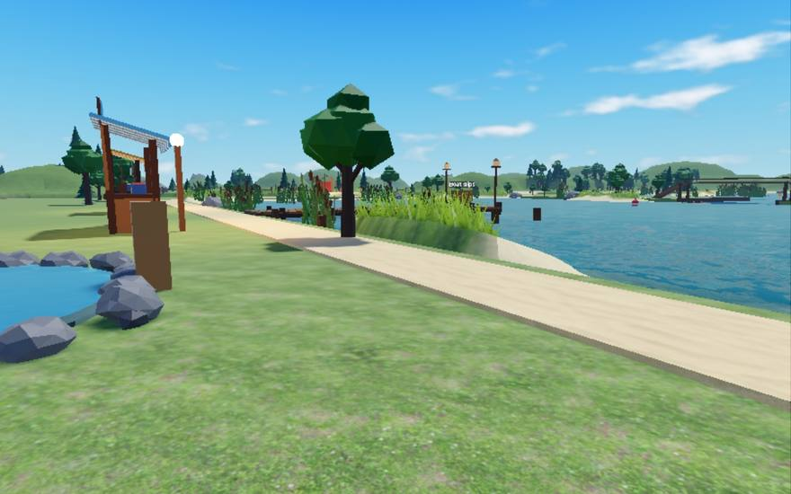
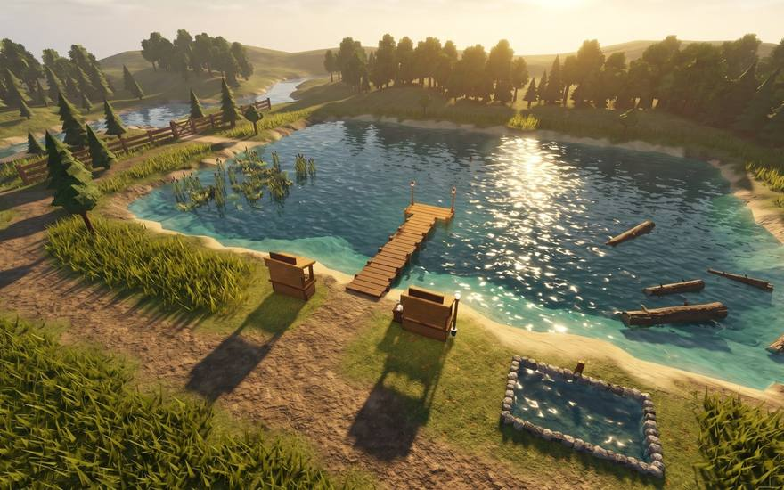
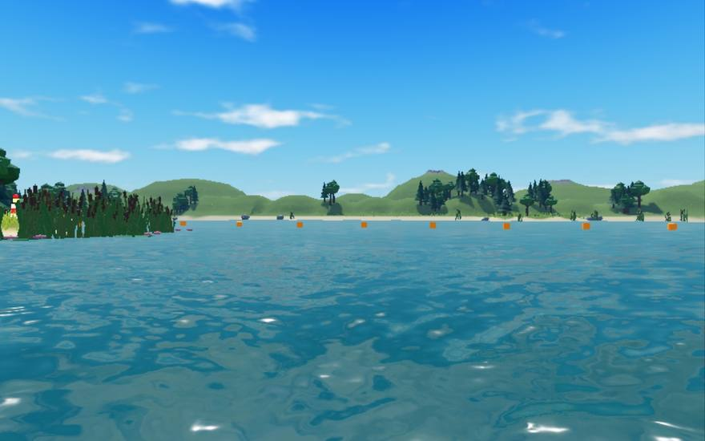
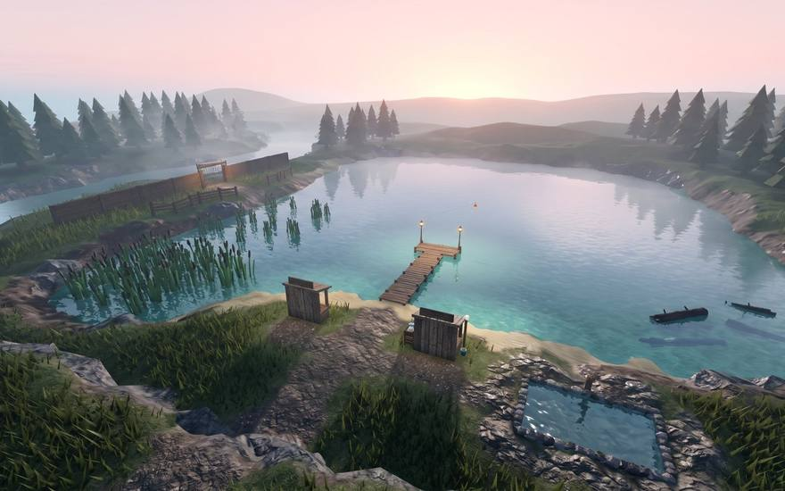

Fishing Game plan, 11/28/2026 to 12/15/2026
First make the game stop looking like Roblox. Then give the boats somewhere worth going. Eight steps, two weekends with Liam in the middle, built overnight by Opus with Fable ruling on every picture.
Does not slipFirst to cutA weekend with Liam
The last leg was planned for three weeks and was built in two nights, so read these dates as an order with two anchors.
The look critic went from 3 to 7.2 out of 10 last leg, on light, water and layout alone. These are today's game and the mockups Stewart approved on 11/26/2026.




Roblox has two lighting styles. The game is on Soft, which Roblox's own reference describes as a flat, retro look. The other one, Realistic, can be switched on by script. That is the first thing to try.
848 of 1,163 parts are plain Plastic, the ground is stock grass and sand, and there is not one custom texture in the place. The style is simple shapes with real materials, and the materials half was never built.
Roblox terrain now has 62 slots for a game's own ground materials. Each island can have its own ground, and a season later is a repaint.
The server sets the light and water for all players at once. So the whole world has one water colour, and a phone gets the same extras as the PC. The look moves to each player's own screen.
A faster boat would cross the blue water in 6 seconds. Boats need distance and somewhere to arrive.
Part one
Shapes stay chunky and few. Materials, light, water and composition are true. Six rules hold in every area.
The pine lake at the end of the road. Warm and lived-in.
watermeadowforest floordock timberlantern
New ground everywhere. The sand strip becomes a wandering gravel path. Stones, driftwood and a leaning birch at the waterline. Twice the trees on the far shore. Planks with nail heads, rope coils, a tin roof on the bait shack.
The cold stream in the woods. Shaded and moving.
clear watermosswet slatecedar bark
The critic reads it today as an open ditch in a meadow. The trees close over it, the light goes dappled, the rocks get moss, the riffle gets white water and you can see the pebbles.
Big water. Scale, weather, a little awe.
basinblue watergranitedriftwoodbuoy
Four times as long. Rocky headlands and wind-bent pines in place of green domes. Real buoys and a bell you hear before you see it. A marina. Far ridges so the lake seems to go on.
The far rock. Clean, cold, windy.
pink granitelichenorange lichenjuniperwater
Its own ground, its own small kit of models, its own water and haze, and one landmark you can read from far off: a single bent pine.
Built now so seasons are cheap later: the ground goes through repaintable slots, leaf colours come from one table, and every tree's top is its own piece.
| Check | Today | Target |
|---|---|---|
| Look critic, home lake and creek | 7.2 | 8.0 |
| Look critic, Big Lake | Not scored yet (expect 5 to 6) | 8.0 |
| Look critic, boats and island | None yet | 8.0 |
| Screens critic | Not scored yet | 7.5, and 8 for phone reading |
| Plastic parts you can see | 848 parts in all | 0 |
| Materials of our own | 0 | 20 or more |
| Labels floating in the world | Every sign | 0 |
| Triangles on screen | 342,000 | 700,000 at most on PC, 350,000 on phone |
| Texture memory | 60 MB | 200 MB at most on PC, 130 on phone |
| Frame rate | Inside budget | 60 on the PC, 30 on the phone |
A score is the median of three critic runs on fixed camera shots, so before and after can be compared. When eyes and score disagree, eyes win: Fable over the critic, Stewart over both. If the look costs too much on a phone, it steps down in a set order, and the old fallback style (Cozy Diorama) is only ever used with Stewart's yes.
Part two
Every boat works with one player and is better with two. Every boat is a different way to fish, and every boat keeps a job after you buy the next one.
| Cedar Canoe (new) | Inflatable Dinghy (in the game) | Deep-V (written, never played) | |
|---|---|---|---|
| Price | 350 coins | 1,200 | 4,000 |
| Speed | 7 studs a second alone, 11 with two paddling | 12 | 26 |
| Where it goes | Home lake, the basin, Lily Cove | Home lake and the basin | The Big Lake only, blue water included |
| Its own job | Quiet: wary fish bite better. The only boat into Lily Cove. | Quick and nimble. Small enough to beach on the lighthouse island. | The far island, trolling, the fish finder. |
| Alone | Paddle and fish | Drive and fish | Drive, troll with a speed lock, read the finder when stopped |
| With two | Faster, both fish, net each other's catch | One fishes while one holds the boat | One steers the troll line, one holds the rod; a live finder and marker buoys |
| The look | Cedar strip, ribs, cane seats | Orange rubber tubes, a small outboard | White hull, console, red and green running lights |
Coins are no longer split on a shared catch. The angler gets full price and the helper gets a 10 percent bonus on top.
The full checklists are in the plan file. These are the checks that matter most.
Nothing new to play. One corner of the lake (the dock, both stands, a stretch of bank) built at full quality and measured, so the rest is built to a known cost.
Opus runs Studio. Fable's modeler makes the first materials and the dock. Sonnet downloads, uploads and measures.
Watch out forThe new lighting may cost too much on a phone. That is why there are two versions and a set order for stepping down.
The whole home lake with real wood, stone, ground and light. All 26 fish get a wet, scaled skin.
Two Fable modelers on materials and hero models, Opus on the ground and the dressing.
Watch out forBusy textures can hide the bobber, so every texture is softened and the bobber check is part of done.
A field-guide catch card, a tackle-box shop, a brass coin and a sun dial, and signs painted on boards.
Opus builds it from one style file. Fable makes the paper, canvas and brass and rules on the screens.
Watch out forA restyle must not disturb a tuned minigame: skins only, sizes locked.
A shaded creek under cedars with mossy boulders, white water at the riffle and pebbles you can see.
Opus, with Fable's modeler on moss, ferns and roots.
Watch out forDeep shade must not hide the bobber.
A cedar canoe for two at 350 coins. A dinghy with a second seat. A boathouse with the boats for sale floating beside it. A horn. Netting each other's fish.
Two Opus builders, one on rules and one on feel. Fable's modeler builds the canoe and the boathouse.
Watch out forTwo real players can't be automated. Test dummies cover the rules, and the weekend with Liam covers the rest.
Paddle the canoe together and net each other's fish. Try the gamepad and a phone. Confirm Liam's account so the two-player parts can be tested for real.
A Big Lake four times as long. Dark blue water with swell past a real buoy line. A marina. The Deep-V on sale, with trolling and a fish finder.
Opus rebuilds the lake and builds the Deep-V. Fable's modeler makes the boat, marina and buoys and rules on the look.
Watch out forOpen water can look empty. Islets, buoys, birds, haze and weather fill it.
A granite island far out, with five fish found nowhere else and a trout that bites only under the northern lights.
Cisco Kokanee Arctic Grayling Bull Trout Inconnu Aurora Trout
Two Fable modelers on the island and six fish, Opus on the rules and the sky.
Watch out forNew rare fish can make coins too easy. They are tuned in the money simulator before they go in.
Run the Deep-V out to the island together. One reads the finder and calls the mark, one trolls it, one nets the other's fish.
The trophy wall becomes a glass case in a shed by the pond: twelve mounts, brass plaques with the date, a lantern at night. First thing to cut if the leg runs long.
| Idea | Call | Why |
|---|---|---|
| Graphics | In, first | Stewart's first priority, and the biggest gain is unbuilt. |
| Vehicles | In | His second priority. |
| A bigger lake | In | Boats need distance to matter. |
| The two-person Deep-V | In | It is now a one-person boat that is better with two, so most of it can be proven before Liam's account is in. |
| Islands with their own fish | One, as the recipe | One done properly sets the pattern and the budget for the rest. |
| The trophy case | In last | Cheap once the materials exist. First to cut. |
| The ocean dock | Waits | A whole new place: saltwater fish, real waves, bigger boats. This leg builds what it will reuse. |
| Breeding genetics | Waits, next leg | It needs fish that can vary in look, which this leg makes possible. The colour morphs are a job for Liam. |
| Seasons | Wait | This leg makes them cheap. Autumn is first up next leg. Winter with ice fishing is a leg of its own. |
| The Godlike creature | Waits for Liam | The blue water, the storms and the Deep-V are its stage. |
None of these block the start. The answer shown is used until you say otherwise.